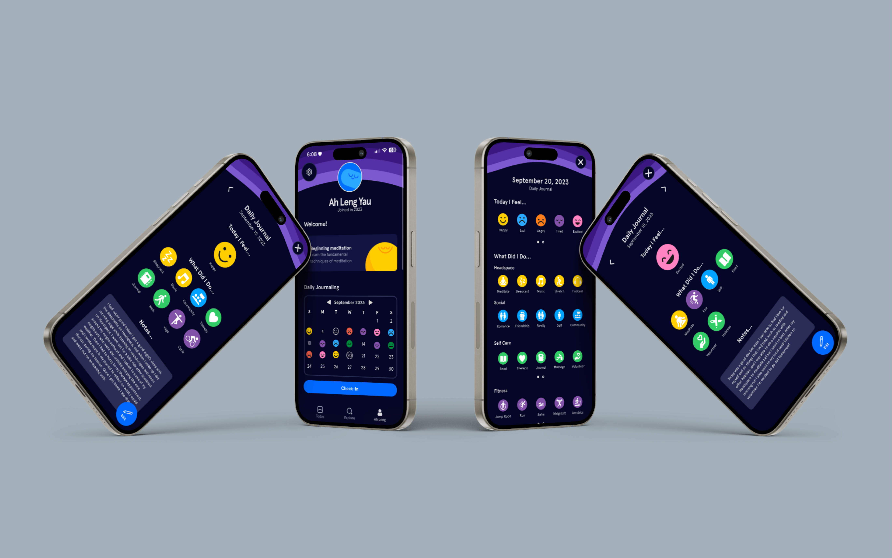
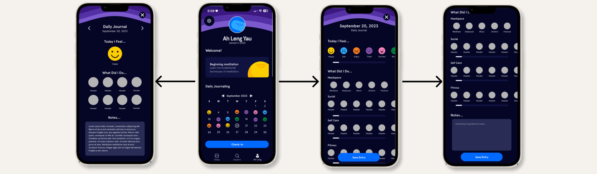

Headspace Feature Design
Project Overview
In this solo project, I created a new feature for the popular meditation guidance app Headspace and pitched the concept in class. I ideated, researched, designed and prototyped a feature that involved daily journaling on Headspace, allowing users to track their emotions, daily activities relating to self care, social life, fitness, and Headspace-related activities, and gave users a space to write notes down about their day.
Process Analysis
I spent time analyzing the current app, by myself and through other users to find out the wants and needs of users and features I could potentially add. I found two users of Headspace and asked them questions pertaining to what they like about the app, what they don’t like, what they feel is missing and how they use the app regularly. I found that users felt that Headspace was missing a personalized aspect that catered to a user’s journey with mediation and their mental health. From the feedback I received I came up with two potential ideas a tailored for you page for users that showed user’s Headspace content that catered to what they had previously viewed, and Headspace journaling. I decided to move forward with the journaling feature as I felt it met more user needs, allowing users to track their personal growth, and goals. Using Headspace’s current UI styling I created elements and wireframes that were seamless and consistent with the current interface of the Headspace app, and moved them to Protopie to add user interactions and create my final prototype.
Project Conflicts and Solutions
This project allowed me to increase my skills in prototyping. In doing so, I had to learn how to use a new software “Protopie” to build my prototype, which proved to be difficult for me. I gave myself a lot of time to work out any issues in my prototype and research tutorials on how to use Protopie. Reflecting on this project I would have wanted to add more educational features to my journaling feature, potentially allowing users to understand the benefits of the different activities listed in the daily journal, or what to do when they track a certain emotion (ex. how to feel better when a user tracks that they feel sad).
Project Roles
Visual Design, Prototyping, User-Testing, Research
Project Members
- Lauryn Yau
Project Artifacts


Headspace Mockups
User Flow